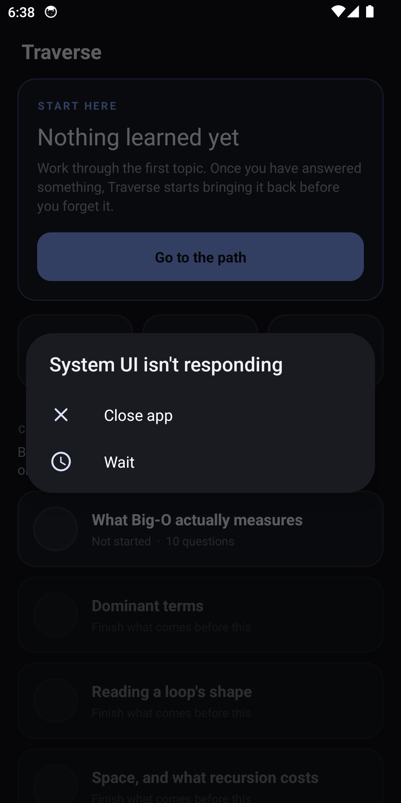
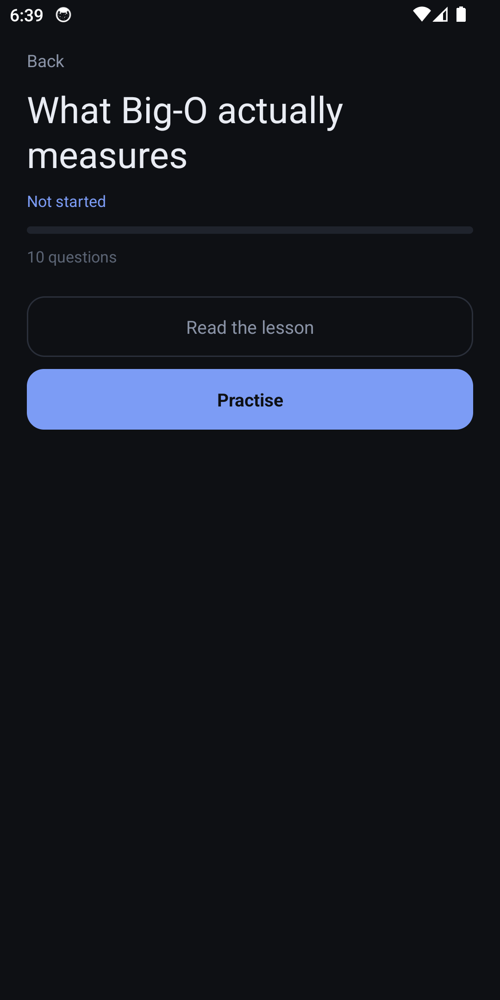
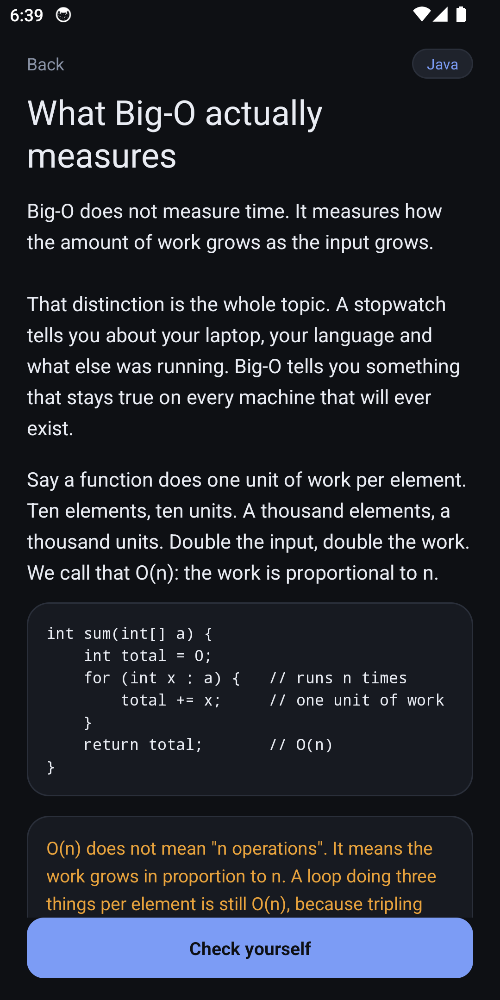
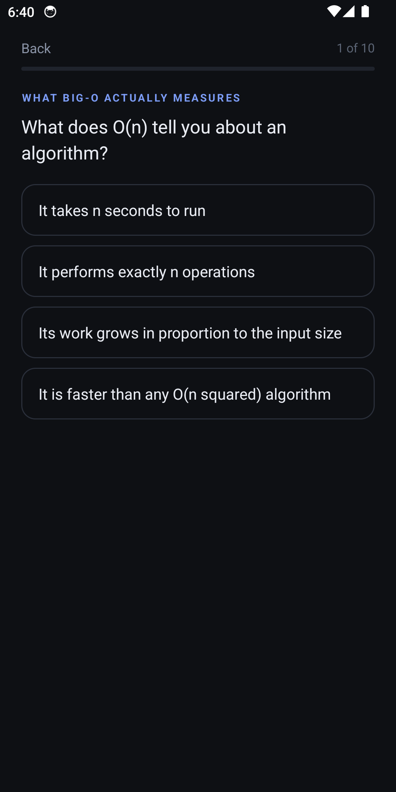
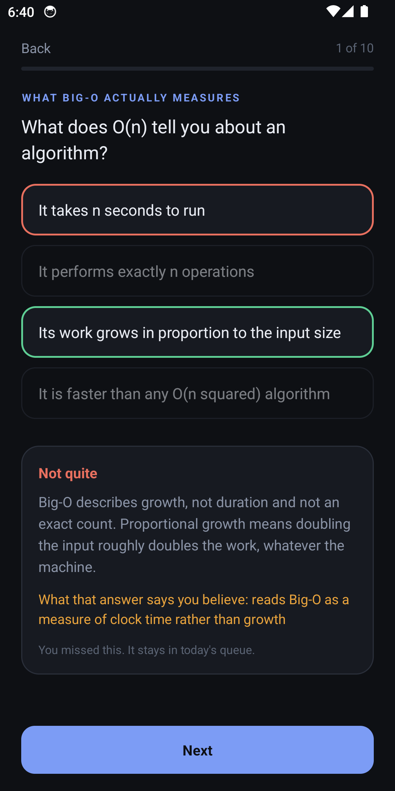

Traverse
An offline tutor that brings data-structures questions back before you forget them.
What v1 is
One unit, Complexity and correctness. Five topics and fifty questions. You read a short lesson, answer a quiz, and see the explanation either way. A wrong option files the misconception the author wrote for that choice. Items you miss come back the same day. Items you know come back later, on an SM-2 schedule. Topics stay locked until the ones before them are actually underway.
It is the first unit, not a course. There is no account, no network, and no second unit hiding behind a menu.
- Offline quizzes, graded from an answer key
- Spaced review and a mastery score that weights a later, cold answer more heavily
- Prerequisite gating along the path
Not in this version: code problems, the rest of a DSA syllabus, LeetCode logging, charts, notifications, or search.
Screens





Stack
Java, on Android. No Gradle and no third-party libraries. The curriculum is a JSON file checked before every build. minSdk 24.
Install
Build Traverse.apk with bash build.sh. The signed APK is a build product, not a file in the repository, and this page does not link a binary.